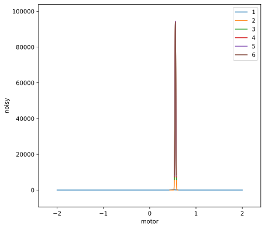

Lesson 5, Part B: Custom Plan to Lineup a Peak - Concise Summary#
[1]:
from instrument.collection import *
from instrument.devices.ideas.lesson5 import motor, noisy
from instrument.plans.ideas.lesson5 import lineupScans
I Thu-11:14:28 - ############################################################ startup
I Thu-11:14:28 - logging started
I Thu-11:14:28 - logging level = 10
I Thu-11:14:28 - c:\Users\Pete\Documents\projects\bluesky_training\lessons\instrument\collection.py
I Thu-11:14:28 - c:\Users\Pete\Documents\projects\bluesky_training\lessons\instrument\mpl\notebook.py
I Thu-11:14:29 - bluesky framework
I Thu-11:14:29 - c:\Users\Pete\Documents\projects\bluesky_training\lessons\instrument\framework\check_python.py
I Thu-11:14:29 - c:\Users\Pete\Documents\projects\bluesky_training\lessons\instrument\framework\check_bluesky.py
I Thu-11:14:31 - c:\Users\Pete\Documents\projects\bluesky_training\lessons\instrument\framework\initialize.py
I Thu-11:14:34 - c:\Users\Pete\Documents\projects\bluesky_training\lessons\instrument\framework\metadata.py
I Thu-11:14:34 - c:\Users\Pete\Documents\projects\bluesky_training\lessons\instrument\framework\callbacks.py
I Thu-11:14:35 - writing to SPEC file: c:\Users\Pete\Documents\projects\bluesky_training\lessons\20200521-111435.dat
I Thu-11:14:35 - >>>> Using default SPEC file name <<<<
I Thu-11:14:35 - file will be created when bluesky ends its next scan
I Thu-11:14:35 - to change SPEC file, use command: newSpecFile('title')
I Thu-11:14:35 - c:\Users\Pete\Documents\projects\bluesky_training\lessons\instrument\devices\ideas\lesson5.py
I Thu-11:14:35 - c:\Users\Pete\Documents\projects\bluesky_training\lessons\instrument\plans\ideas\lesson5.py
[2]:
# for jupyterlab ...
# https://stackoverflow.com/a/51932652
%matplotlib inline
[3]:
RE(lineupScans(noisy, motor, -2, 2, numScans=6, numPts=47))
Transient Scan ID: 1 Time: 2020-05-21 11:14:35
Persistent Unique Scan ID: '090c0af6-d4af-4648-b5ee-d2fb44fb51c1'
New stream: 'primary'
+-----------+------------+------------+------------+
| seq_num | time | motor | noisy |
+-----------+------------+------------+------------+
| 1 | 11:14:35.7 | -2.00000 | 0 |
| 2 | 11:14:35.9 | -1.91304 | 0 |
| 3 | 11:14:36.0 | -1.82609 | 0 |
| 4 | 11:14:36.1 | -1.73913 | 0 |
| 5 | 11:14:36.2 | -1.65217 | 0 |
| 6 | 11:14:36.2 | -1.56522 | 0 |
| 7 | 11:14:36.3 | -1.47826 | 0 |
| 8 | 11:14:36.4 | -1.39130 | 0 |
| 9 | 11:14:36.6 | -1.30435 | 0 |
| 10 | 11:14:36.7 | -1.21739 | 0 |
| 11 | 11:14:36.8 | -1.13043 | 0 |
| 12 | 11:14:36.9 | -1.04348 | 0 |
| 13 | 11:14:37.0 | -0.95652 | 0 |
| 14 | 11:14:37.1 | -0.86957 | 0 |
| 15 | 11:14:37.2 | -0.78261 | 0 |
| 16 | 11:14:37.3 | -0.69565 | 0 |
| 17 | 11:14:37.4 | -0.60870 | 0 |
| 18 | 11:14:37.5 | -0.52174 | 0 |
| 19 | 11:14:37.6 | -0.43478 | 0 |
| 20 | 11:14:37.7 | -0.34783 | 0 |
| 21 | 11:14:37.9 | -0.26087 | 0 |
| 22 | 11:14:38.0 | -0.17391 | 0 |
| 23 | 11:14:38.1 | -0.08696 | 0 |
| 24 | 11:14:38.2 | 0.00000 | 0 |
| 25 | 11:14:38.3 | 0.08696 | 0 |
| 26 | 11:14:38.5 | 0.17391 | 0 |
| 27 | 11:14:38.6 | 0.26087 | 0 |
| 28 | 11:14:38.7 | 0.34783 | 0 |
| 29 | 11:14:38.8 | 0.43478 | 0 |
| 30 | 11:14:38.9 | 0.52174 | 170 |
| 31 | 11:14:39.0 | 0.60870 | 0 |
| 32 | 11:14:39.1 | 0.69565 | 0 |
| 33 | 11:14:39.2 | 0.78261 | 0 |
| 34 | 11:14:39.2 | 0.86957 | 0 |
| 35 | 11:14:39.3 | 0.95652 | 0 |
| 36 | 11:14:39.4 | 1.04348 | 0 |
| 37 | 11:14:39.5 | 1.13043 | 0 |
| 38 | 11:14:39.6 | 1.21739 | 0 |
| 39 | 11:14:39.7 | 1.30435 | 0 |
| 40 | 11:14:39.8 | 1.39130 | 0 |
| 41 | 11:14:39.9 | 1.47826 | 0 |
| 42 | 11:14:40.0 | 1.56522 | 0 |
| 43 | 11:14:40.1 | 1.65217 | 0 |
| 44 | 11:14:40.2 | 1.73913 | 0 |
| 45 | 11:14:40.3 | 1.82609 | 0 |
| 46 | 11:14:40.4 | 1.91304 | 0 |
| 47 | 11:14:40.5 | 2.00000 | 0 |
+-----------+------------+------------+------------+
generator rel_scan ['090c0af6'] (scan num: 1)
I Thu-11:14:40 - starting rescan 1
Transient Scan ID: 2 Time: 2020-05-21 11:14:40
Persistent Unique Scan ID: '2a425be2-6333-4882-9d0e-fb94fc5d04da'
New stream: 'primary'
+-----------+------------+------------+------------+
| seq_num | time | motor | noisy |
+-----------+------------+------------+------------+
| 1 | 11:14:41.0 | 0.43478 | 0 |
| 2 | 11:14:41.1 | 0.43856 | 0 |
| 3 | 11:14:41.3 | 0.44234 | 0 |
| 4 | 11:14:41.4 | 0.44612 | 0 |
| 5 | 11:14:41.6 | 0.44991 | 0 |
| 6 | 11:14:41.7 | 0.45369 | 0 |
| 7 | 11:14:41.8 | 0.45747 | 0 |
| 8 | 11:14:42.0 | 0.46125 | 0 |
| 9 | 11:14:42.0 | 0.46503 | 0 |
| 10 | 11:14:42.2 | 0.46881 | 0 |
| 11 | 11:14:42.3 | 0.47259 | 0 |
| 12 | 11:14:42.4 | 0.47637 | 0 |
| 13 | 11:14:42.6 | 0.48015 | 0 |
| 14 | 11:14:42.7 | 0.48393 | 0 |
| 15 | 11:14:42.8 | 0.48771 | 0 |
| 16 | 11:14:42.9 | 0.49149 | 0 |
| 17 | 11:14:43.0 | 0.49527 | 0 |
| 18 | 11:14:43.2 | 0.49905 | 0 |
| 19 | 11:14:43.3 | 0.50284 | 0 |
| 20 | 11:14:43.3 | 0.50662 | 0 |
| 21 | 11:14:43.4 | 0.51040 | 1 |
| 22 | 11:14:43.5 | 0.51418 | 4 |
| 23 | 11:14:43.6 | 0.51796 | 37 |
| 24 | 11:14:43.7 | 0.52174 | 169 |
| 25 | 11:14:43.8 | 0.52552 | 665 |
| 26 | 11:14:43.9 | 0.52930 | 2156 |
| 27 | 11:14:44.0 | 0.53308 | 6132 |
| 28 | 11:14:44.1 | 0.53686 | 14171 |
| 29 | 11:14:44.2 | 0.54064 | 28740 |
| 30 | 11:14:44.4 | 0.54442 | 48997 |
| 31 | 11:14:44.4 | 0.54820 | 71394 |
| 32 | 11:14:44.5 | 0.55198 | 89425 |
| 33 | 11:14:44.6 | 0.55577 | 94182 |
| 34 | 11:14:44.7 | 0.55955 | 84221 |
| 35 | 11:14:44.8 | 0.56333 | 64664 |
| 36 | 11:14:44.9 | 0.56711 | 41987 |
| 37 | 11:14:45.1 | 0.57089 | 23121 |
| 38 | 11:14:45.2 | 0.57467 | 10870 |
| 39 | 11:14:45.3 | 0.57845 | 4308 |
| 40 | 11:14:45.4 | 0.58223 | 1470 |
| 41 | 11:14:45.5 | 0.58601 | 414 |
| 42 | 11:14:45.6 | 0.58979 | 116 |
| 43 | 11:14:45.7 | 0.59357 | 21 |
| 44 | 11:14:45.8 | 0.59735 | 3 |
| 45 | 11:14:45.9 | 0.60113 | 2 |
| 46 | 11:14:45.9 | 0.60491 | 0 |
| 47 | 11:14:46.0 | 0.60870 | 0 |
+-----------+------------+------------+------------+
generator rel_scan ['2a425be2'] (scan num: 2)
I Thu-11:14:46 - starting rescan 2
Transient Scan ID: 3 Time: 2020-05-21 11:14:46
Persistent Unique Scan ID: '7fb5afbd-5115-4174-9f2d-a9e0c1b41ca2'
New stream: 'primary'
+-----------+------------+------------+------------+
| seq_num | time | motor | noisy |
+-----------+------------+------------+------------+
| 1 | 11:14:46.5 | 0.53297 | 5939 |
| 2 | 11:14:46.6 | 0.53394 | 7420 |
| 3 | 11:14:46.7 | 0.53490 | 9324 |
| 4 | 11:14:46.8 | 0.53587 | 11781 |
| 5 | 11:14:46.9 | 0.53683 | 13918 |
| 6 | 11:14:47.0 | 0.53780 | 17220 |
| 7 | 11:14:47.1 | 0.53876 | 20747 |
| 8 | 11:14:47.2 | 0.53973 | 24533 |
| 9 | 11:14:47.3 | 0.54069 | 28989 |
| 10 | 11:14:47.4 | 0.54166 | 33724 |
| 11 | 11:14:47.5 | 0.54262 | 38901 |
| 12 | 11:14:47.6 | 0.54359 | 44151 |
| 13 | 11:14:47.8 | 0.54455 | 49877 |
| 14 | 11:14:47.8 | 0.54551 | 55650 |
| 15 | 11:14:47.9 | 0.54648 | 61574 |
| 16 | 11:14:48.0 | 0.54744 | 67105 |
| 17 | 11:14:48.1 | 0.54841 | 72833 |
| 18 | 11:14:48.2 | 0.54937 | 77953 |
| 19 | 11:14:48.3 | 0.55034 | 82438 |
| 20 | 11:14:48.4 | 0.55130 | 86118 |
| 21 | 11:14:48.5 | 0.55227 | 89741 |
| 22 | 11:14:48.6 | 0.55323 | 92300 |
| 23 | 11:14:48.7 | 0.55420 | 93778 |
| 24 | 11:14:48.8 | 0.55516 | 93723 |
| 25 | 11:14:48.9 | 0.55613 | 93403 |
| 26 | 11:14:49.0 | 0.55709 | 91770 |
| 27 | 11:14:49.1 | 0.55806 | 89259 |
| 28 | 11:14:49.1 | 0.55902 | 86094 |
| 29 | 11:14:49.2 | 0.55999 | 82284 |
| 30 | 11:14:49.3 | 0.56095 | 77638 |
| 31 | 11:14:49.4 | 0.56192 | 72604 |
| 32 | 11:14:49.5 | 0.56288 | 67242 |
| 33 | 11:14:49.6 | 0.56384 | 61318 |
| 34 | 11:14:49.7 | 0.56481 | 55509 |
| 35 | 11:14:49.8 | 0.56577 | 49665 |
| 36 | 11:14:49.9 | 0.56674 | 43910 |
| 37 | 11:14:50.0 | 0.56770 | 38255 |
| 38 | 11:14:50.1 | 0.56867 | 33384 |
| 39 | 11:14:50.2 | 0.56963 | 28498 |
| 40 | 11:14:50.3 | 0.57060 | 24398 |
| 41 | 11:14:50.4 | 0.57156 | 20557 |
| 42 | 11:14:50.5 | 0.57253 | 16792 |
| 43 | 11:14:50.6 | 0.57349 | 14103 |
| 44 | 11:14:50.7 | 0.57446 | 11565 |
| 45 | 11:14:50.8 | 0.57542 | 9159 |
| 46 | 11:14:50.9 | 0.57639 | 7383 |
| 47 | 11:14:51.0 | 0.57735 | 5895 |
+-----------+------------+------------+------------+
generator rel_scan ['7fb5afbd'] (scan num: 3)
I Thu-11:14:51 - starting rescan 3
Transient Scan ID: 4 Time: 2020-05-21 11:14:51
Persistent Unique Scan ID: '0c8a0d2c-45e2-4b96-9b18-d7edadfd9bfa'
New stream: 'primary'
+-----------+------------+------------+------------+
| seq_num | time | motor | noisy |
+-----------+------------+------------+------------+
| 1 | 11:14:51.5 | 0.53394 | 7468 |
| 2 | 11:14:51.6 | 0.53486 | 9208 |
| 3 | 11:14:51.7 | 0.53579 | 11360 |
| 4 | 11:14:51.8 | 0.53671 | 13619 |
| 5 | 11:14:51.9 | 0.53763 | 16801 |
| 6 | 11:14:52.0 | 0.53855 | 19720 |
| 7 | 11:14:52.1 | 0.53947 | 23580 |
| 8 | 11:14:52.2 | 0.54039 | 27476 |
| 9 | 11:14:52.3 | 0.54132 | 31866 |
| 10 | 11:14:52.4 | 0.54224 | 36698 |
| 11 | 11:14:52.5 | 0.54316 | 41865 |
| 12 | 11:14:52.6 | 0.54408 | 47150 |
| 13 | 11:14:52.7 | 0.54500 | 52712 |
| 14 | 11:14:52.8 | 0.54593 | 58342 |
| 15 | 11:14:52.9 | 0.54685 | 63446 |
| 16 | 11:14:53.0 | 0.54777 | 69158 |
| 17 | 11:14:53.0 | 0.54869 | 74981 |
| 18 | 11:14:53.1 | 0.54961 | 79357 |
| 19 | 11:14:53.2 | 0.55054 | 83030 |
| 20 | 11:14:53.3 | 0.55146 | 88150 |
| 21 | 11:14:53.3 | 0.55238 | 89988 |
| 22 | 11:14:53.4 | 0.55330 | 92487 |
| 23 | 11:14:53.5 | 0.55422 | 93545 |
| 24 | 11:14:53.7 | 0.55514 | 94301 |
| 25 | 11:14:53.8 | 0.55607 | 93510 |
| 26 | 11:14:53.9 | 0.55699 | 92659 |
| 27 | 11:14:54.0 | 0.55791 | 89856 |
| 28 | 11:14:54.1 | 0.55883 | 86661 |
| 29 | 11:14:54.2 | 0.55975 | 82795 |
| 30 | 11:14:54.3 | 0.56068 | 79177 |
| 31 | 11:14:54.4 | 0.56160 | 74595 |
| 32 | 11:14:54.5 | 0.56252 | 68717 |
| 33 | 11:14:54.6 | 0.56344 | 63488 |
| 34 | 11:14:54.7 | 0.56436 | 57839 |
| 35 | 11:14:54.8 | 0.56529 | 52325 |
| 36 | 11:14:54.9 | 0.56621 | 47011 |
| 37 | 11:14:55.0 | 0.56713 | 41482 |
| 38 | 11:14:55.1 | 0.56805 | 36857 |
| 39 | 11:14:55.2 | 0.56897 | 31819 |
| 40 | 11:14:55.3 | 0.56989 | 27310 |
| 41 | 11:14:55.4 | 0.57082 | 23424 |
| 42 | 11:14:55.5 | 0.57174 | 19744 |
| 43 | 11:14:55.6 | 0.57266 | 16456 |
| 44 | 11:14:55.7 | 0.57358 | 13938 |
| 45 | 11:14:55.8 | 0.57450 | 11252 |
| 46 | 11:14:55.9 | 0.57543 | 9133 |
| 47 | 11:14:55.9 | 0.57635 | 7355 |
+-----------+------------+------------+------------+
generator rel_scan ['0c8a0d2c'] (scan num: 4)
I Thu-11:14:56 - starting rescan 4
Transient Scan ID: 5 Time: 2020-05-21 11:14:56
Persistent Unique Scan ID: 'ff913577-ba58-4232-b0c7-75ed85a3b99a'
New stream: 'primary'
+-----------+------------+------------+------------+
| seq_num | time | motor | noisy |
+-----------+------------+------------+------------+
| 1 | 11:14:56.4 | 0.53427 | 7972 |
| 2 | 11:14:56.5 | 0.53517 | 9770 |
| 3 | 11:14:56.6 | 0.53608 | 12054 |
| 4 | 11:14:56.7 | 0.53699 | 14699 |
| 5 | 11:14:56.8 | 0.53789 | 17439 |
| 6 | 11:14:57.0 | 0.53880 | 20888 |
| 7 | 11:14:57.1 | 0.53971 | 24327 |
| 8 | 11:14:57.2 | 0.54061 | 28296 |
| 9 | 11:14:57.3 | 0.54152 | 32649 |
| 10 | 11:14:57.4 | 0.54243 | 37878 |
| 11 | 11:14:57.5 | 0.54333 | 42984 |
| 12 | 11:14:57.6 | 0.54424 | 47960 |
| 13 | 11:14:57.7 | 0.54515 | 53420 |
| 14 | 11:14:57.8 | 0.54605 | 58788 |
| 15 | 11:14:57.9 | 0.54696 | 65091 |
| 16 | 11:14:58.1 | 0.54787 | 69984 |
| 17 | 11:14:58.1 | 0.54877 | 75111 |
| 18 | 11:14:58.2 | 0.54968 | 80031 |
| 19 | 11:14:58.3 | 0.55059 | 83867 |
| 20 | 11:14:58.4 | 0.55149 | 87211 |
| 21 | 11:14:58.5 | 0.55240 | 90346 |
| 22 | 11:14:58.6 | 0.55331 | 92721 |
| 23 | 11:14:58.7 | 0.55421 | 93943 |
| 24 | 11:14:58.8 | 0.55512 | 94433 |
| 25 | 11:14:58.9 | 0.55603 | 93890 |
| 26 | 11:14:59.0 | 0.55693 | 92443 |
| 27 | 11:14:59.1 | 0.55784 | 90227 |
| 28 | 11:14:59.2 | 0.55875 | 86968 |
| 29 | 11:14:59.3 | 0.55965 | 84250 |
| 30 | 11:14:59.4 | 0.56056 | 79616 |
| 31 | 11:14:59.5 | 0.56146 | 75465 |
| 32 | 11:14:59.6 | 0.56237 | 70180 |
| 33 | 11:14:59.7 | 0.56328 | 64458 |
| 34 | 11:14:59.8 | 0.56418 | 59300 |
| 35 | 11:14:59.9 | 0.56509 | 53559 |
| 36 | 11:15:00.0 | 0.56600 | 48203 |
| 37 | 11:15:00.2 | 0.56690 | 43093 |
| 38 | 11:15:00.3 | 0.56781 | 37729 |
| 39 | 11:15:00.4 | 0.56872 | 33280 |
| 40 | 11:15:00.4 | 0.56962 | 28844 |
| 41 | 11:15:00.5 | 0.57053 | 24541 |
| 42 | 11:15:00.6 | 0.57144 | 21040 |
| 43 | 11:15:00.7 | 0.57234 | 17668 |
| 44 | 11:15:00.8 | 0.57325 | 14679 |
| 45 | 11:15:00.8 | 0.57416 | 12278 |
| 46 | 11:15:00.9 | 0.57506 | 9925 |
| 47 | 11:15:01.0 | 0.57597 | 8033 |
+-----------+------------+------------+------------+
generator rel_scan ['ff913577'] (scan num: 5)
I Thu-11:15:01 - starting rescan 5
Transient Scan ID: 6 Time: 2020-05-21 11:15:01
Persistent Unique Scan ID: 'cbab1c0f-735b-42f0-9a25-b5ee1cd99ffa'
New stream: 'primary'
+-----------+------------+------------+------------+
| seq_num | time | motor | noisy |
+-----------+------------+------------+------------+
| 1 | 11:15:01.6 | 0.53442 | 8315 |
| 2 | 11:15:01.7 | 0.53532 | 10168 |
| 3 | 11:15:01.8 | 0.53622 | 12518 |
| 4 | 11:15:01.9 | 0.53712 | 15197 |
| 5 | 11:15:02.0 | 0.53802 | 17924 |
| 6 | 11:15:02.1 | 0.53892 | 21375 |
| 7 | 11:15:02.2 | 0.53982 | 25121 |
| 8 | 11:15:02.3 | 0.54072 | 29240 |
| 9 | 11:15:02.4 | 0.54162 | 33192 |
| 10 | 11:15:02.5 | 0.54253 | 37912 |
| 11 | 11:15:02.6 | 0.54343 | 43546 |
| 12 | 11:15:02.7 | 0.54433 | 48567 |
| 13 | 11:15:02.8 | 0.54523 | 54321 |
| 14 | 11:15:02.9 | 0.54613 | 59448 |
| 15 | 11:15:03.0 | 0.54703 | 64584 |
| 16 | 11:15:03.1 | 0.54793 | 70566 |
| 17 | 11:15:03.1 | 0.54883 | 74946 |
| 18 | 11:15:03.2 | 0.54973 | 79810 |
| 19 | 11:15:03.3 | 0.55063 | 83778 |
| 20 | 11:15:03.4 | 0.55153 | 87723 |
| 21 | 11:15:03.4 | 0.55243 | 91026 |
| 22 | 11:15:03.5 | 0.55333 | 92493 |
| 23 | 11:15:03.6 | 0.55423 | 93087 |
| 24 | 11:15:03.7 | 0.55513 | 93751 |
| 25 | 11:15:03.8 | 0.55603 | 93784 |
| 26 | 11:15:04.0 | 0.55693 | 92186 |
| 27 | 11:15:04.1 | 0.55784 | 90709 |
| 28 | 11:15:04.2 | 0.55874 | 87352 |
| 29 | 11:15:04.3 | 0.55964 | 83722 |
| 30 | 11:15:04.4 | 0.56054 | 79497 |
| 31 | 11:15:04.5 | 0.56144 | 75354 |
| 32 | 11:15:04.6 | 0.56234 | 70044 |
| 33 | 11:15:04.7 | 0.56324 | 65133 |
| 34 | 11:15:04.8 | 0.56414 | 59699 |
| 35 | 11:15:05.0 | 0.56504 | 54098 |
| 36 | 11:15:05.1 | 0.56594 | 48645 |
| 37 | 11:15:05.2 | 0.56684 | 43078 |
| 38 | 11:15:05.3 | 0.56774 | 38394 |
| 39 | 11:15:05.4 | 0.56864 | 33488 |
| 40 | 11:15:05.5 | 0.56954 | 29224 |
| 41 | 11:15:05.6 | 0.57044 | 24963 |
| 42 | 11:15:05.7 | 0.57134 | 21435 |
| 43 | 11:15:05.8 | 0.57224 | 17869 |
| 44 | 11:15:05.9 | 0.57315 | 14802 |
| 45 | 11:15:06.1 | 0.57405 | 12356 |
| 46 | 11:15:06.1 | 0.57495 | 10289 |
| 47 | 11:15:06.3 | 0.57585 | 8364 |
+-----------+------------+------------+------------+
generator rel_scan ['cbab1c0f'] (scan num: 6)
I Thu-11:15:06 - summary results:
======= ================== ====================
scan_id center FWHM
======= ================== ====================
1 0.5217391304347827 0.08695652173913038
2 0.5551622593668892 0.02218910044666933
3 0.5551446917068981 0.021202868891197713
4 0.5551184101136344 0.02085296234373646
5 0.5551337498836414 0.020713437341607355
6 0.5551294671837574 0.020828361854811184
======= ================== ====================
[3]:
('090c0af6-d4af-4648-b5ee-d2fb44fb51c1',
'2a425be2-6333-4882-9d0e-fb94fc5d04da',
'7fb5afbd-5115-4174-9f2d-a9e0c1b41ca2',
'0c8a0d2c-45e2-4b96-9b18-d7edadfd9bfa',
'ff913577-ba58-4232-b0c7-75ed85a3b99a',
'cbab1c0f-735b-42f0-9a25-b5ee1cd99ffa')
